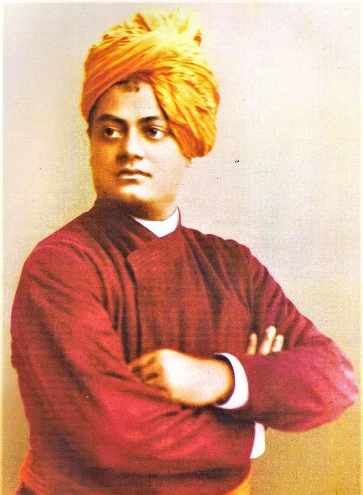

Swami Vivekananda
Swami Vivekananda (12 January 1863 – 4 July 1902), born Narendranath Datta, was an Indian Hindu monk. He was a chief disciple of the 19th-century Indian mystic Ramakrishna. He was a key figure in the introduction of the Indian philosophies of Vedanta and Yoga to the Western world, and is credited with raising interfaith awareness, bringing Hinduism to the status of a major world religion during the late 19th century. He was a major force in the contemporary Hindu reform movements in India, and contributed to the concept of nationalism in colonial India. Vivekananda founded the Ramakrishna Math and the Ramakrishna Mission. He is perhaps best known for his speech which began with the words "Sisters and brothers of America ...," in which he introduced Hinduism at the Parliament of the World's Religions in Chicago in 1893.
Born into an aristocratic Bengali Kayastha family of Calcutta, Vivekananda was inclined towards spirituality. He was influenced by his guru, Ramakrishna, from whom he learnt that all living beings were an embodiment of the divine self; therefore, service to God could be rendered by service to humankind. After Ramakrishna's death, Vivekananda toured the Indian subcontinent extensively and acquired first-hand knowledge of the conditions prevailing in British India. He later travelled to the United States, representing India at the 1893 Parliament of the World's Religions. Vivekananda conducted hundreds of public and private lectures and classes, disseminating tenets of Hindu philosophy in the United States, England and Europe. In India, Vivekananda is regarded as a patriotic saint, and his birthday is celebrated as National Youth Day.